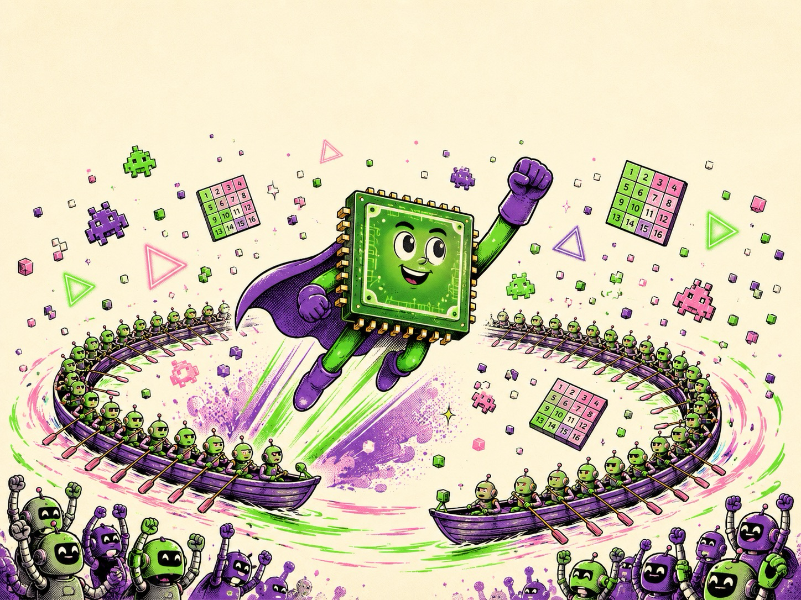
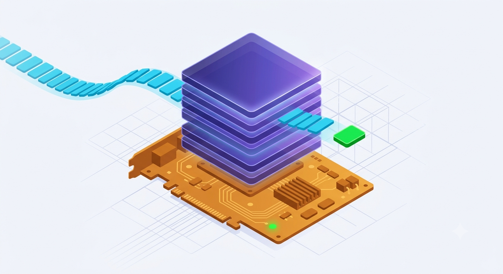
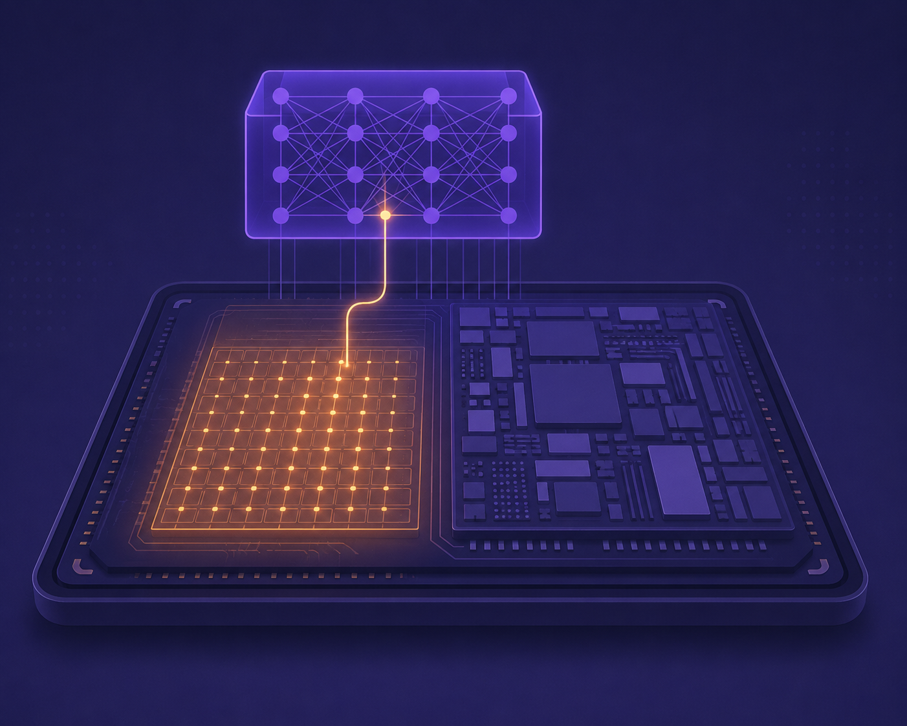
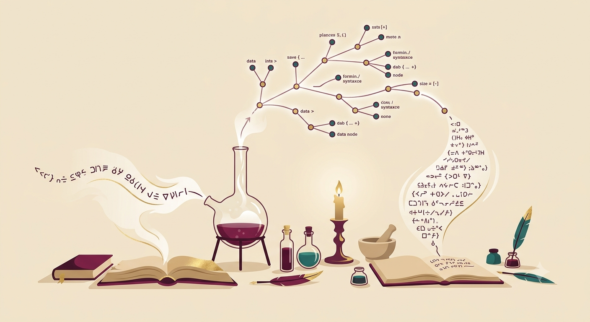

Guitar!
in the voice of The GuitaristA modern, interactive first book for the acoustic guitarist — the twelve notes, the fretboard map, intervals, how chords are built, your first open chords, rhythm, scales, and keys. Every diagram, chord, and fretboard is playable in the browser via a built-in Web Audio pluck synth. Told in the voice of Mateo Cruz: slow is smooth, smooth becomes fast.
Fun with Calculus.
in the voice of Isaac NewtonA first-principles introduction to calculus in the voice of Isaac Newton — the derivative discovered from a falling stone before it is ever named, the rules of change, the integral as accumulated area (with an orbitable 3D solid of revolution), the Fundamental Theorem that binds them, a toolkit of e^x/ln/sin/cos, Taylor series, and where calculus runs the world in 2026 (gradient descent & back-propagation, the SIR epidemic model, Black-Scholes). Every chapter is interactive: drag the secant into a tangent, fill an area with Riemann rectangles, sweep the accumulation function, grow a Taylor polynomial, and roll a ball down a loss surface. (The book's six seed 'concepts' were the user's freeform brief — 'explain the derivative from motion along a line', 'add topics you deem important', 'include 2D/3D animations and current use-cases' — realized as the eight chapters below.)
Rust lifetime
in the voice of The CrafterA craftsman's guide to Rust lifetimes — from stack, heap, ownership, and borrowing up through elision, 'static, and the modern NLL/Polonius borrow checker — told in the Crafting Interpreters voice.
Attention is all you need
in the voice of The CrafterA layered, first-principles reading of the 2017 Transformer paper (Vaswani et al., arXiv:1706.03762), in the Crafting Interpreters voice: from the sequential bottleneck and word embeddings, through query/key/value attention, scaled dot-product, multi-head, and positional encoding, up to the full encoder-decoder architecture, why self-attention wins, the training recipe and BLEU results, and how this one paper became modern LLMs (GPT, BERT) — closing with a full acronym-and-term glossary.
Apple ShortCuts app
A field guide to Apple Shortcuts: actions and pipelines, logic without code, every launch surface, self-running automations, the OS 26 Apple Intelligence layer, and the use cases where it genuinely earns its keep.
Unix File IO
in the voice of Richard FeynmanEverything is a file: how open, read, write, close, lseek, dup2, and pipes turn one tiny idea into files, terminals, and shell pipelines alike.

How GPUs work
in the voice of The Clear MentorA student-friendly, zine-flavored tour of the GPU — from 'why thousands of weak cores beat a few strong ones' through warps, CUDA kernels, the memory mountain, the graphics pipeline, and Tensor Cores, to why LLM chatbots are memory-bandwidth-bound, how 100,000-GPU AI factories work, and how to get free GPU time today. Includes funny cartoon image slots for every chapter.
Rust: Fearless System programming
in the voice of Richard FeynmanA witty, concept-first tour of Rust for the agentic-coding era — ownership, illegal-states-unrepresentable, errors as values, fearless concurrency, zero-cost abstractions, Cargo, how to build Rust with a coding agent, and when Rust is (and isn't) the right call.
ManifoldCAD
in the voice of The Clear MentorA beginner-friendly tour of ManifoldCAD — code-driven CAD that builds guaranteed-watertight solids: primitives, boolean modelling, transforms, 2D-to-3D extrude/revolve, the full JavaScript API, organic warp/refine/smooth, GLTFNode scenes with materials and animation, and real use cases from parametric printable parts to an embeddable geometry kernel.

Custom LLM Models
in the voice of The Clear MentorA hands-on path from 'an LLM is a black box' to fine-tuning your own Llama or Qwen and serving it behind a real API — the forward pass, prefill vs decode, the KV cache (with the memory formula worked by hand), quantization, LoRA/QLoRA, a full worked fine-tune, and production serving with vLLM.
Spark DSL
in the voice of Richard FeynmanA first-principles, usage-focused tour of Elixir's Spark — entities, sections, extensions, schemas, the compile-time pipeline, and introspection — building to why introspectable DSLs are a natural fit for LLM-agentic systems (Ash AI, Jido) and a from-scratch agent DSL an LLM can read and call.

Meki Memory Agent in Elixir
A faithful tour of MeKi (Memory-based Expert Knowledge Injection, arXiv 2602.03359) — scaling an LLM's capacity with cheap ROM storage instead of FLOPs — then a runnable re-implementation in Elixir's Nx & Axon: token-level memory experts, the low-rank additive-sigmoid gate, the re-parameterization trick that folds training into a zero-cost lookup table, and serving it with Nx.Serving. Architecture and code are real; benchmark numbers are quoted from the paper, not reproduced.
Lua programming language
in the voice of The Clear MentorA practical tour of Lua 5.5 — tables, metatables, coroutines — and how to embed it safely inside Elixir with the lua library and script your Ash domain with ash_lua, ending in real multi-tenant use cases.

Elixir Meta Programming
in the voice of The Clear MentorCode as data, from quote/unquote to macros, hygiene, the use pattern, and compile-time code generation — then why a self-describing language fits the LLM-agentic era (tool catalogs, structured outputs, Igniter AST-patching), and when not to reach for a macro.
Claude Tools
in the voice of The Clear MentorA field guide to every built-in Claude Code tool — grouped by family, each with its permission default and the gotchas that bite.

Ash Intelligent
A PRD for 'AshIntelligence' — a declarative intelligence layer for the Elixir Ash Framework — consolidated into a 12-chapter field guide and grounded in today's real Ash AI ecosystem (ash_ai, ash_oban, ash_state_machine, Spark, ReqLLM/LangChain). The pasted PRD was split by the app into 377 line-fragments; these were merged into coherent chapters that cover the vision, architecture, the Spark DSL, how you'd actually build it, and — the requested focus — the exciting use cases.
Ash Devices
in the voice of Richard FeynmanAn engineering manifesto turned field guide: model, simulate, and operate cyber-physical systems as declarative Ash resources — where hardware is just an adapter and the simulator is the default runtime.
Understand Software Memory Management
in the voice of Richard FeynmanA first-principles field guide to how a running program borrows, uses, and reclaims memory — stack vs heap, the four manual-memory bugs, how garbage collection really works, and how Rust, Zig, Java, Python, and Go each answer the one question: who frees the heap?
Golang for Vibe
in the voice of Richard FeynmanA first-principles tour of Go in Feynman's voice, built for vibe coders: why Go's plainness makes AI-written code easy to verify, the five-minute mental model, goroutines & channels, errors as values, structs & implicit interfaces, a dependency-free JSON web API, the agent workflow with Go's built-in graders, and shipping one static binary. Verified against Go 1.26.
ESP32-S3 Programming
in the voice of Richard FeynmanA first-principles field guide to the ESP32-S3: what the silicon is, what to build with it, how to write its firmware in Rust, and how to wire a fleet of devices to an Elixir/Phoenix backend over MQTT.
Algorithms for Modern developers
A practical, use-case-driven tour of the dozen algorithmic ideas that run real software — Big-O, binary search, hashing, sorting, two pointers/sliding window, graph traversal, Dijkstra, dynamic programming, greedy/intervals, heaps & top-K, and probabilistic structures — each paired with the real scenarios where you'd reach for it.
Rust: Fearless Systems Programming
in the voice of Richard FeynmanA first-principles tour of Rust in Feynman's voice: ownership and moves, borrowing, the memory/traits/lifetimes engine room, enums & pattern matching, error handling, generics/iterators/closures, fearless concurrency, and Cargo. Verified against stable Rust 1.96 / 2024 edition.
No books match that search.